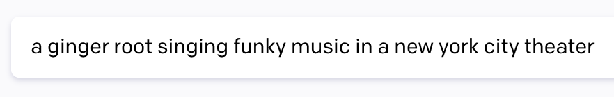

ginger root on september 26 7pm at webster hall, nyc !!!!!!!
rumor has it that you swung and missed on this shot...

but your golf ball still found a way to my heart
happy 23rd birthday to my partner in crime. 365 days around the sun... and you're still the grouch to my gruff, the boo to my bee, the smug to my smelly. you are sillier than a bag full of silly banz, hipper than the hippest loafers in brooklyn, and smarter than...a fifth grader. you may have the worst track record for picking up earplugs off the ground, but you can pick up even the saddest jess when she needs it the most (from the top of a hawaiian mountain no less). so congrats, you've cracked the hardest the code, which i've personally heard is harder than getting into harvard or columbia.
a few of my favorite moments with you this year include:
- getting past my fear of skiing and snowboarding and spending a few days on the jersey slopes where i held your hand on the ski lift and tumbled like a limp [redacted] on the greenest mountain
- walking around roma with you, in your pre-covid and post covid ridden state (though i will say i preferred the former heh) and being UGLY DELICIOUS with our tacos
- when i got to meet your star parents and miles in west palm beach and you took me on a personal memory lane of your high school years
- your visits to d.c. which personally falls into a category of its own because there would be no jess x michael without it. lime-ing around, buying unnecessarily heavy books and michelin star meals
- mather formal when we got to DRESS UP TOGETHER in FUN HATS and DANCE A LOT and MEET ALL MY FRIENDS. people were jealous. they talked (and why wouldn't they). also, i personally thought we owned the dance floor, what would you say?
- seeing you learn to make new york city your home, after trying out the better city in the world and not liking it as much. that's okay. ill convince you otherwise some other time in better conditions.
- striving to be a better boyfriend and having those necessary fights and talks and learning from one another. there are too many specifics but you know what i mean. we've really grown, haven't we!
even though you are tip tap typing on your keyboard all day looking at god who knows what stock, you still find time to send me cute if not deeply mysterious lockets, text my your latest tweets, catch up on all the netflix shows i've watched without you (sorry!), and the most important in my eyes, call me to see how i'm doing at the end of the day. really, that's what made our mostly long distance relationship work out so well. so that's my monologue, which makes me your biggest fan! (one at 70 degrees farenheit at night, no more no less)
love you! jess